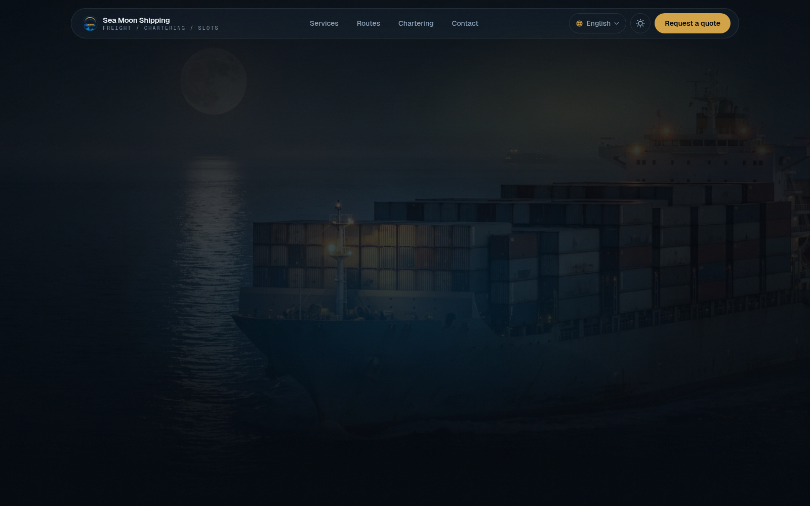

Live website
Seamoon Shipping
A professional digital presence for a shipping company. The goal was direct communication, credible presentation and a clear path to contact.
Recently shippedLive in productionDesign + build + deploy
Selected work
A growing archive of websites, infrastructure and practical digital work. One project is ready to explore now.
Everything shipped and ready to show, updated as new work goes live.

Live website
A professional digital presence for a shipping company. The goal was direct communication, credible presentation and a clear path to contact.
The work is not only the final screen. It is the structure, constraints and operational thinking underneath it.
Content, navigation and hierarchy were shaped around what a visitor needs to understand first.
The visual system stays focused so future pages can be added without losing coherence.
A service website should help the right person take the next step.
The experience is considered across desktop and smaller screens.
More work will appear here as it becomes ready to show with the same level of care.
// available-for-work
I work remotely worldwide, with a focus on freelance web development and systems-minded problem solving.
Email Mohammadmohammad@studio:~$ ./start-conversation